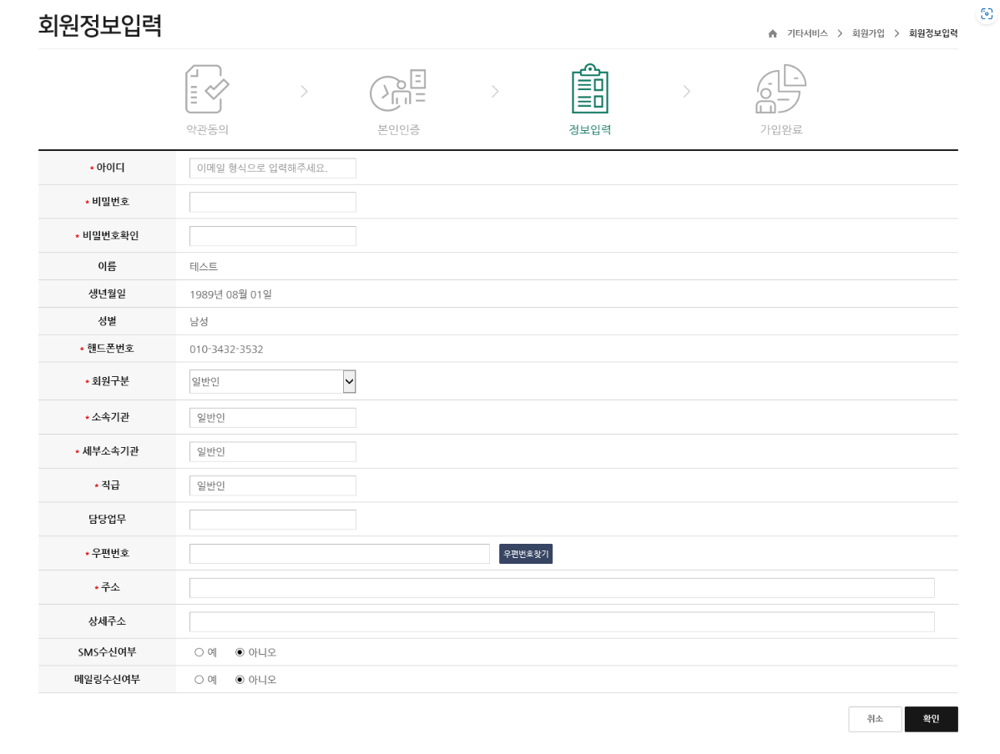

회원가입 방법
지속가능한 산림을 디자인하는 미래인재 양성
forstering future human resources to desing sustainable forests
회원가입방법
회원가입 매뉴얼
1. 산림교육원 정보시스템 fotilms.forest.go.kr 접속
2. 오른쪽 상단 회원가입 버튼 클릭
3. 이용약관, 개인정보보호정책, 개인정보처리방침 각 부분에 체크 후 확인버튼 클릭
※ 약관을 체크하지 않을 경우 회원가입이 정상처리 되지 않습니다.
4. 회원가입을 위한 공공 I-PIN 또는 휴대폰 본인 인증을 해야 합니다.
※ 개인정보보호를 위한 주민등록번호 수집이 불가하여 인증처리 합니다.
5. 공공 I-PIN 인증 가입 안되신 분은 사이트(www.gpin.go.kr) 가입 후 진행
6. 휴대폰 인증 : 별도의 팝업창 활성화 후 본인 휴대폰 인증
7. 공공아이핀 인증방법
공공아이핀 홈페이지 온라인 발급안내 바로가기
8. 휴대폰 인증방법
1) 휴대폰 본인인증 버튼을 누르면 아래의 통신사 선택화면이 나오면 본인 통신사 선택
2) 간편본인확인(어플사용), 휴대폰본인확인(문자확인) 두가지 중 선택하여 본인인증
9. 본인 인증 후 정보입력 페이지 이동
1) 아이디(이메일형식 ex : asdf@korea.kr)로 입력.
※ 교육선발 확인 문자 확인 후 가입 시 반드시 받으신 문자 메시지 e-mail로 가입해야 합니다.
2) 회원구분(중앙부처, 지자체, 일반인)으로 구분하여 선택
3) 나머지 부분은 아래 빨간색 설명을 참고하여 회원가입
